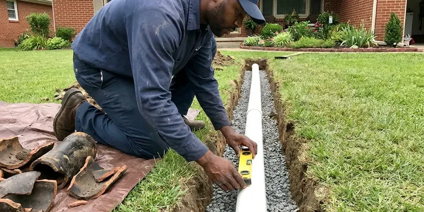

Slab Leak Repair in Montgomery, AL
Dealing with a slab leak in Montgomery, AL can be stressful, but BRV Plumbing is here to help. We offer professional and efficient repair services to protect your home's foundation.
- Fast Leak Detection
- Expert Foundation Repair
- Advanced Equipment
- Upfront Pricing

Need Professional Slab Leak Repair in Montgomery, AL?
Our team is ready to provide a thorough inspection and lasting repair for your home's foundation.
Reliable Slab Leak Repair for Your Montgomery, AL Home
At BRV Plumbing, we understand the urgency of slab leak repair for Montgomery, AL homeowners. Our skilled technicians are trained to handle all types of slab leaks, from pinhole leaks in copper pipes to cracks in PEX lines, ensuring a durable repair. We prioritize minimizing disruption to your home while restoring your plumbing system's integrity and protecting your foundation.
Our expertise includes:
- Precise electronic leak detection
- Expert pipe rerouting and tunneling
- Foundation-safe repair methods

Additional Plumbing Repair Services in Montgomery, AL
We offer expert plumbing repair services across Montgomery, AL to fix leaks, restore flow, and keep your system running smoothly.


Customers
Why Choose BRV Plumbing for Slab Leak Repair in Montgomery, AL?
Our plumbers are equipped with specialized training and tools to accurately diagnose and repair even the most challenging slab leaks, saving you time and money in the long run.
- Local Knowledge, We understand the specific challenges of Alabama's expansive clay soils and their impact on foundations and underground piping.
- Advanced Tools, Our technicians use cutting-edge leak detection equipment to find hidden leaks with minimal disruption.
- Lasting Repairs, We focus on durable repair methods, from direct slab penetration to pipe rerouting, ensuring your plumbing lasts.
Citywide Coverage
BRV Plumbing proudly serves every neighborhood in Montgomery, offering prompt and reliable slab leak repair services. Whether you are in the heart of downtown or in the surrounding communities, our team is ready to respond quickly to your plumbing emergency.
Experienced Team
Our team of licensed plumbers has extensive experience in diagnosing and repairing slab leaks specific to Alabama's climate and building styles. They undergo continuous training on the latest repair techniques and safety protocols.
Safety-First Approach
Safety is paramount in all our slab leak repair operations. We strictly adhere to all local and state plumbing codes in Alabama, ensuring that every repair is not only effective but also safe and compliant.
Trusted Certified Montgomery Plumbing Services Professionals
At BRV Plumbing, we take pride in providing certified plumbing services throughout Montgomery, AL. Backed by leading industry credentials, our experienced plumbers combine technical skill with genuine customer care. Whether it is repair, installation, or maintenance, we follow strict safety and quality standards to deliver lasting results you can trust.
Call Us Now PHCC Plumbing Contractor Recognition
PHCC Plumbing Contractor Recognition Better Business Bureau (BBB) Accreditation
Better Business Bureau (BBB) Accreditation Angi Certified Pro
Angi Certified Pro ISO 9001 Quality Management Certification
ISO 9001 Quality Management CertificationReliable Slab Leak Repair Services in Montgomery, AL
Electronic Slab Leak Detection in Montgomery
Pinpointing a hidden slab leak requires specialized tools. Our plumbers use advanced electronic listening devices and ground penetrating radar to accurately locate the exact source of the leak under your foundation. This precision minimizes the need for extensive demolition, saving you time, money, and structural inconvenience. We can detect leaks in various pipe materials, including copper, PEX, and galvanized steel, even in the noisy urban environment of Montgomery.

Direct Slab Penetration Repair in Montgomery, AL
When a slab leak is directly accessible and localized, direct slab penetration is often the most efficient repair method. This involves carefully cutting a small section of your concrete slab to access and repair or replace the damaged pipe section. Our team ensures the repair is fully compliant with Alabama plumbing codes and the slab is properly restored, preventing future issues. We take great care to contain dust and debris during this process in your Montgomery home.
Pipe Rerouting and Repiping in Montgomery
For more extensive damage, multiple leaks, or pipes that are too old and corroded to repair reliably, pipe rerouting is a long-term solution. This involves abandoning the leaking line under the slab and installing a new pipe through the walls or attic. This method bypasses the problematic area entirely, providing a fresh, durable plumbing line. It is a common solution for aging homes in Montgomery with original copper or galvanized plumbing.
Tunneling Slab Leak Repair in Montgomery, AL
In some cases, especially when the leak is under a critical load-bearing wall or in a difficult-to-access area, tunneling beneath the foundation is the preferred method. This allows our plumbers to access the damaged pipe from outside your home, avoiding disruption to your interior floors and finishes. Tunneling is a non-invasive interior method that requires skilled excavation and shoring to ensure structural integrity throughout the repair process in Montgomery, AL.
Emergency Slab Leak Services in Montgomery
A burst pipe under your slab can quickly escalate into a major emergency, causing significant water damage and potential foundation shifts. BRV Plumbing offers emergency slab leak repair services to address critical leaks rapidly. Our emergency response team is equipped to isolate the leak, prevent further damage, and begin the repair process as quickly as possible, minimizing the impact on your Montgomery property. Do not hesitate to call if you suspect a major leak.
Commercial Slab Leak Repair in Montgomery, AL
Slab leaks in commercial properties present unique challenges due to business operations and larger, more complex plumbing systems. BRV Plumbing provides specialized commercial slab leak detection and repair services for businesses across Montgomery, AL. We work efficiently to minimize downtime and disruption to your business, understanding the importance of a swift resolution to protect your commercial investment and operations.
Advanced Leak Detection Technology in Montgomery
Our commitment to effective slab leak repair includes investing in the latest diagnostic technology. We utilize equipment such as thermal imaging cameras to detect temperature anomalies caused by leaking hot water lines, and highly sensitive acoustic sensors to listen for the sound of escaping water. This advanced tech allows us to precisely locate leaks without guesswork, even in challenging environments within Montgomery's diverse building stock.

Slab Leak Repair for PEX and Copper Lines in Montgomery, AL
Whether your home in Montgomery, AL has modern PEX piping or traditional copper lines, our plumbers are proficient in repairing both. Pinhole leaks are common in older copper due to corrosive soil conditions and water chemistry, while PEX can sometimes suffer from installation issues or rodent damage. We carry a full range of parts and tools for both materials, ensuring a correct and durable repair no matter your pipe type.
Slab Leak Repair Near Me in Montgomery, AL
When you need fast and reliable slab leak repair near me in Montgomery, AL, BRV Plumbing is your local expert. Our strategically located teams ensure a quick response to your call, minimizing water damage and protecting your foundation. We are committed to serving our community with integrity and top-quality plumbing solutions.
Don't let a hidden slab leak undermine your home's integrity. For professional slab leak repair near me, BRV Plumbing offers prompt service and lasting results throughout the Montgomery area. Trust our experienced plumbers to handle your foundation plumbing issues with precision and care.
BRV Plumbing at a Glance
- Licensed and insured plumbers serving Montgomery, AL
- Same-day appointments and 24/7 emergency response
- Upfront, flat-rate pricing before work begins
- 4.8-star rated by 549+ Alabama customers
Montgomery Map
Montgomery Information
- Population
- 195,287
- Area codes
- 334/251/205
- Service area
- Montgomery and communities within 40 miles
- Nearby
- Prattville, Auburn, Opelika, Alabaster
Slab leaks in Montgomery, AL are particularly concerning due to the region's expansive clay soils, which can shift and put immense pressure on underground pipes, making professional detection and repair crucial to protect your home's foundation.
Expert Services
Trust our professionals for reliable BRV Plumbing solutions in Montgomery, AL.
Our Specialized Plumbing Services in Montgomery, AL
At BRV Plumbing, we provide a complete range of plumbing services across Montgomery, AL. From leak detection to full system installations, our team ensures fast, precise, and affordable service for both residential and commercial properties. Explore our core services below:


How Our Slab Leak Repair Process Works in Montgomery, AL
We follow a clear, step-by-step approach to accurately detect, diagnose, and repair slab leaks in Montgomery, AL.
Request a Quote
Contact BRV Plumbing by calling (256) 391-9413 to schedule an appointment. Our friendly staff will gather initial information about your concerns.
Leak Detection
Our technicians arrive with advanced equipment to precisely locate the slab leak, using acoustic and thermal imaging tools. This step ensures we identify the exact source without unnecessary damage.
Repair Options
Once the leak is located, we present you with clear repair options, explaining the pros and cons of direct access, rerouting, or tunneling. We discuss the best approach for your specific situation and property.
Frequently Asked Questions About Slab Leak Repair in Montgomery
The cost of slab leak repair in Montgomery, AL can vary widely, typically ranging from $1,000 to $5,000 or more, depending on the leak's location, severity, and chosen repair method. Simple direct access repairs might be on the lower end, while extensive rerouting or tunneling will be higher. We provide a transparent, upfront estimate after a thorough inspection.
The duration of a slab leak repair depends on the complexity of the leak and the chosen repair method. A direct access repair might be completed in a single day, while rerouting or tunneling could take several days to a week. We provide a time estimate during the initial assessment.
Yes, BRV Plumbing stands behind the quality of our work. We offer a warranty on our slab leak repairs, providing you with peace of mind. The specific terms of the warranty will be discussed with you before any work begins, ensuring your confidence in our lasting solutions.
Slab leaks in Alabama can be caused by several factors, including shifting soil due to our expansive clay, which puts stress on pipes, corrosive water chemistry leading to pinhole leaks in copper, improper pipe installation, and general aging of plumbing materials. Ground vibrations from nearby construction can also contribute to pipe damage.
Common signs of a slab leak include unexplained high water bills, the sound of running water when no fixtures are in use, warm spots on your floor, wet or damp carpets or flooring, visible foundation cracks, and a persistent musty smell. If you notice any of these in your Montgomery home, it is wise to call for an inspection.
Depending on the extent of the repair, especially if it involves significant structural work, pipe rerouting, or changes to the main water line, a plumbing permit may be required by Montgomery authorities. BRV Plumbing will handle all necessary permit applications to ensure your slab leak repair is fully compliant with local building codes.
Older homes in Montgomery with copper or galvanized steel pipes are often more susceptible to slab leaks due to corrosion and material degradation over time. While PEX is more flexible and resistant to corrosion, it can still experience leaks from installation errors, excessive pressure, or physical damage. Our team repairs all common pipe types.
Slab leak repair is a complex job that requires specialized tools and expertise. Attempting a DIY repair can lead to further damage to your plumbing system or foundation, potentially costing more in the long run. It is always recommended to hire a professional plumber from BRV Plumbing for slab leak detection and repair.
What People Are Saying About Our Plumbing Experts?

Sofia M.
Two new toilets installed in one visit, no mess left behind, and the tech even adjusted a faucet he noticed was dripping. Fair pricing and really friendly.
Toilet Installation · Phenix City, AL
Robert G.
The trenchless sewer replacement saved our front yard. They walked us through the camera inspection footage first so we knew exactly what we were paying for.
Sewer Line Replacement · Phenix City, AL
Daniel K.
A pipe burst at 11 pm and they actually answered. The plumber showed up within the hour, shut everything down, and had us back to normal the next morning. Could not ask for more.
Emergency Plumbing · Auburn, AL
Emily R.
I called BRV Plumbing for plumbing repair, and the technician was fast, polite, and thorough. They explained the problem clearly and fixed it the same day. I will definitely hire them again. Highly recommended!
Plumbing Repair · Auburn, ALJames P.
Our commercial plumbing system had a leak under the sink, and BRV Plumbing handled it professionally. The plumbers arrived quickly and restored everything without disruption to our customers.
Commercial Plumbing · Prattville, ALLaura S.
I scheduled a water heater replacement, and the team made the process smooth and affordable. The new unit works perfectly, and they cleaned up after completing the job.
Water Heater Replacement · Prattville, AL